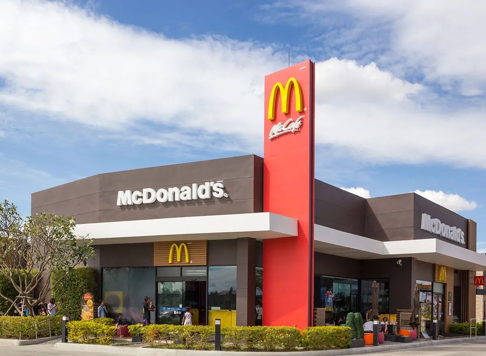

.png)
.png)

En 1954, un hombre llamado Ray Kroc descubrió un pequeño restaurante de hamburguesas en California, y escribió la primera página de nuestra historia. Desde el humilde comienzo como un restaurante pequeño hasta hoy, cuando nos sentimos orgullosos de habernos convertido en uno de los principales minoristas de servicio de comida del mundo con más de 36,000 restaurantes en más de 100 países.
McDonald’s es una de las cadenas de comida rápida más famosas y exitosas del mundo, con más de 38.000 restaurantes en más de 100 países. Pero, ¿qué hace que esta empresa sea tan especial? ¿Cuáles son sus principios y objetivos? ¿Qué valores la guían en su actividad? Pues bien, la respuesta a ello son la Misión, Visión y valores de McDonald’s.
Por ello, a continuación, explicaremos cada uno de estos elementos para entender mejor cómo funciona esta multinacional y qué la diferencia de sus competidores. Acompáñanos en este recorrido por la historia y la filosofía de McDonald’s, la empresa que revolucionó el concepto de la comida rápida.
La misión de McDonald’s es servir comida de calidad, proporcionando siempre una experiencia extraordinaria, y va más allá de generar mejores ingresos o tener clientes satisfechos. Esto busca hacer que los consumidores se sientan valorados y bienvenidos mientras reciben el mejor trato, servicio y producto.
Ellos buscan ser el lugar y la forma de comer preferidos de sus clientes, y para ello se basa en cuatro principios básicos que caracterizan su filosofía empresarial: calidad, servicio, limpieza y valor o asequibilidad.
La visión de McDonald’s es “ser el lugar y la forma de comer preferidos de sus clientes”, lo que implica dirigir esfuerzos y recursos. Esto, con el fin de alcanzar el cien por cien de satisfacción de los consumidores en cada una de sus visitas a los restaurantes.
Para lograrlo, se enfocan en la relación calidad precio de sus productos, la excelente atención de sus clientes y crear un ambiente familiar ideal para que todos la pasen bien compartiendo su comida.
La responsabilidad social corporativa de McDonald's se fundamenta en unos valores que se manifiestan en cada actividad empresarial, tanto en el trabajo con los proveedores, como en el desarrollo profesional de los empleados o en la forma de contribuir a las comunidades donde opera. En McDonald's, compartimos unos valores corporativos, que son aceptados y respetados por todos los empleados.